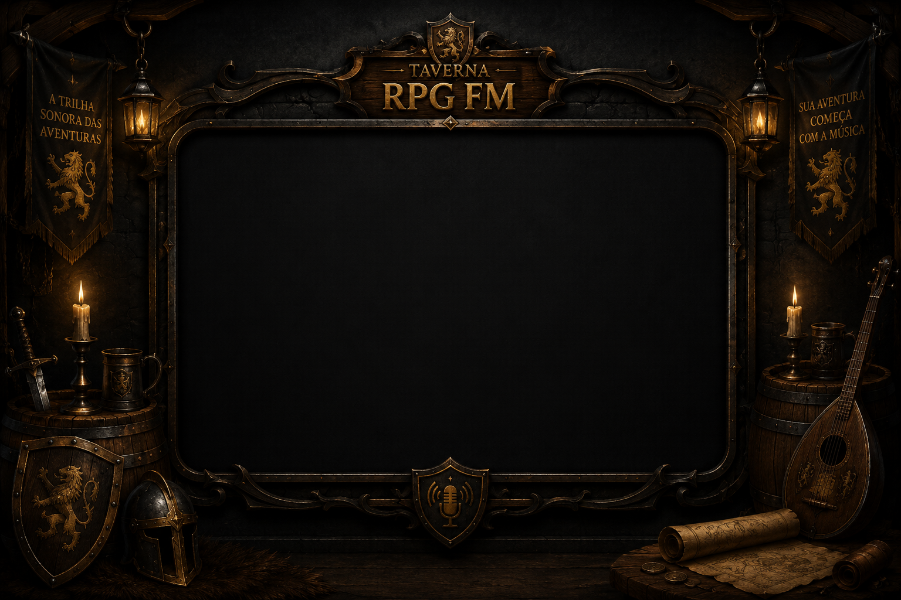

🎻 Mesa do Bardo
O Bardo Está Tocando
AO VIVO

- RÁDIO AO VIVO
- O BARDO ESTÁ TOCANDO
- TAVERNA ABERTA
🎵 MESA DO BARDO · 🔴 TRANSMISSÃO DA TAVERNA
🍺 Balcão da Taverna
Apoie a Taverna
Ajude o Bardo a manter o fogo aceso.
Ao apoiar a Taverna pelo LivePix, você também pode deixar uma mensagem diretamente para o Bardo da Taverna. Conte uma história, mande um salve, deixe uma mensagem para os aventureiros ou simplesmente diga que passou por aqui. 🧙♂️📜
🪙 DEIXE SUAS MOEDAS O Bardo está no balcão esperando sua mensagem.
🍺 DEIXAR MOEDAS E UMA MENSAGEM🔒 Contribuição segura via LivePix · Você escolhe o valor
🤝 Alianças da Taverna
Torne-se Parceiro
Fortaleça a Taverna e torne-se um parceiro oficial.
⚔️ Sua guilda pode fazer parte da Taverna
Empresas e projetos que compartilham da mesma aventura podem se juntar à nossa guilda.
🛡️ TORNAR-SE PARCEIRO🗺️ Território da Taverna
Mapa da Taverna
Explore as regiões e descubra as guildas que caminham conosco.
🏰 Taverna (clique para o Ranking) 🛡️ Guildas aliadas ✦ Regiões
🛡️ Hall de Guildas
Guilda da Taverna
Conheça as guildas aliadas que caminham com a Taverna.
👑 Salão dos Arautos
Ranking dos Arautos
Compartilhe a Taverna e ganhe +1 XP por dia. O registro comprova que a ação de compartilhar foi iniciada aqui no site.
🎲 Meu Arauto
Sem cadastro de e-mail: escolha um apelido (único no ranking) e uma senha. Os dois juntos são a sua chave no salão.
🔐 A senha nunca sai deste navegador: enviamos ao servidor apenas um código derivado dela junto com o apelido. Cada apelido pertence a um único arauto. Não existe recuperação de senha — anote seus dados.
📣 Divulgar a Taverna
⚔️ Salão de Honra
📜 A história continua
Crônicas da Taverna
Registros da jornada — novos capítulos serão escritos conforme a aventura avança.
-
Capítulo I
A Taverna abriu suas portas e a fogueira foi acesa pela primeira vez.
-
Capítulo II
O Bardo começou uma nova transmissão.
-
Capítulo III
Uma nova guilda se juntou à Taverna — Querência Imóveis.
-
Capítulo IV
Uma nova aventura começou.
-
Capítulo V
O Salão dos Arautos foi aberto: quem compartilha a Taverna ganha +1 XP por dia e entra no Ranking dos Membros, aqui mesmo nesta página.